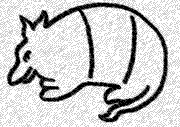

Past TLS Conferences
2004: Issues at the Semantics-Pragmatics Interface
2003: Dynamics, Coarticulation, Speech Production, and Speech Perception
2002: Southwest Workshop in Optimality Theory
2001: The Role of Agreement in Natural Language
2000: Modality and Structure in Signed and Spoken Languages
1999: Perspectives on Argument Structure
1998: Exploring the Boundaries Between Phonetics and Phonology
1997: The Syntax and Semantics of Predication
